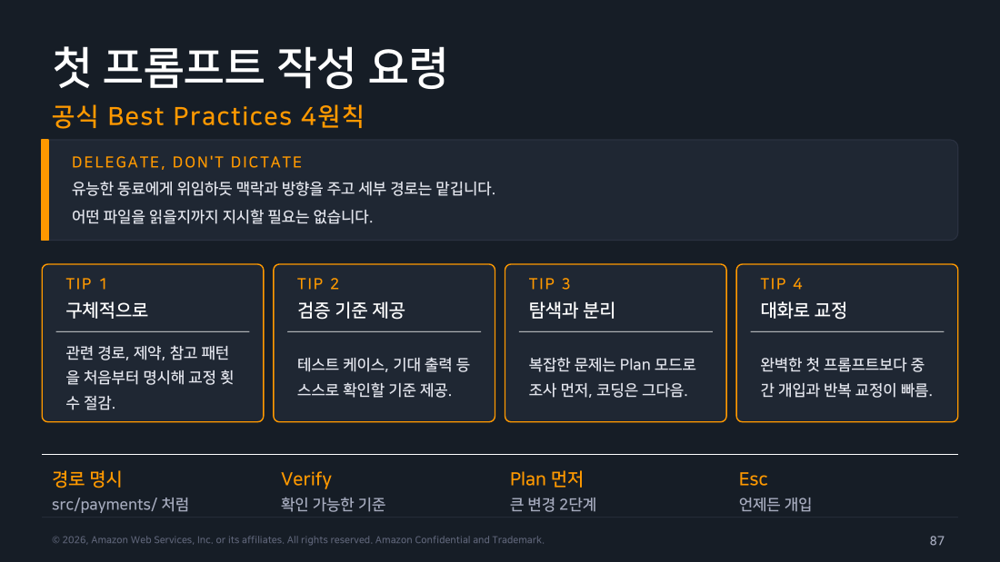
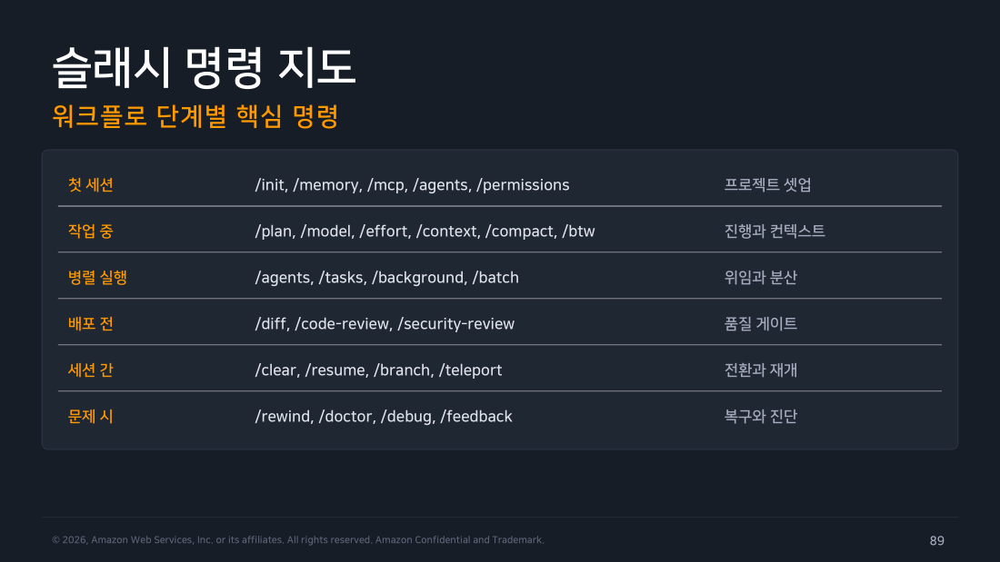

Part 5 — 퀵스타트¶
한 줄 요약¶
구체적 지시와 검증 기준, 상황에 맞는 권한 모드, 그리고 resume과 rewind 만 익혀도 일상 사용의 8할이 완성됩니다.
왜 알아야 하나¶
설치와 인증이 끝나면 이제 실제로 씁니다. 그런데 여기서 대부분이 처음에 겪는 좌절이 있습니다.
"고쳐줘"라고 했더니 엉뚱한 파일을 20개 읽고 이상한 걸 고쳤다.
이건 도구의 문제가 아니라 지시의 문제입니다. Part 5는 "어떻게 말해야 한 번에 되는가"와 "잘못 갔을 때 어떻게 되돌리는가"를 다룹니다.
개념 1 — claude 명령의 기본형¶
claude # 대화형 REPL 시작
claude "질문 또는 작업" # 초기 프롬프트와 함께 시작
claude -p "작업" # 헤드리스 — 결과만 출력하고 종료
claude --model opus # 모델 지정 시작
claude --continue # 최근 세션 이어서
claude --resume # 세션을 선택해 재개
cat data.csv | claude -p "요약" # 파이프 입력
claude --help # 전체 플래그
REPL(Read-Eval-Print Loop)이란 명령을 입력하면 즉시 결과를 보여주고 다시 입력을 기다리는 대화형 셸을 말합니다.
claude를 인자 없이 실행하면 이 모드로 들어갑니다.
개념 2 — 첫 세션 화면과 조작¶
$ cd my-project && claude
> 이 프로젝트가 뭘 하는지 설명해줘
# Claude가 Glob, Read로 구조를 탐색하며 답변
> src/api의 에러 처리 방식을 알려줘
# 후속 질문은 이전 맥락을 그대로 활용
REPL 기본기:
- 프롬프트에 자연어로 지시합니다
- 도구 호출 과정이 실시간으로 표시됩니다
- 대화는 자동 저장되고 재개할 수 있습니다
- / 를 입력하면 명령 목록이 필터링됩니다
조작 키:
| 키 | 동작 |
|---|---|
Esc |
즉시 중단 |
Esc Esc |
되감기 (체크포인트로 롤백) |
Shift+Tab |
권한 모드 순환 |
Ctrl+R |
명령 이력 검색 |
! 접두 |
셸 모드 직접 실행 |
개념 3 — 첫 프롬프트 작성 요령 (공식 Best Practices 4원칙)¶
공식 문서가 내세우는 원칙은 한 문장입니다.
DELEGATE, DON'T DICTATE — 유능한 동료에게 위임하듯 맥락과 방향을 주고 세부 경로는 맡깁니다.
여기서 오해하기 쉬운 게 있습니다. "구체적으로 지시하라"는 말을 "어떤 파일을 어떤 순서로 읽어라"까지 정해주라는 뜻으로 받아들이는 경우입니다. 그건 오히려 역효과입니다. 탐색은 Claude가 훨씬 빠르고, 내가 짚어준 경로가 틀리면 잘못된 곳만 파게 됩니다.
그럼 무엇을 구체적으로 줘야 할까요. 네 가지입니다.
첫째, 범위와 제약을 처음부터 줍니다. src/payments/ 같은 관련 경로, 지켜야 할 제약, 참고할 기존 패턴을 첫 프롬프트에 넣습니다. 이게 있으면 교정 횟수가 줄어듭니다. "어디를 봐라"가 아니라 "여기 언저리 문제다"를 알려주는 겁니다.
둘째, 검증 기준을 함께 줍니다. 이게 가장 효과가 큽니다. 테스트 케이스나 기대 출력처럼 Claude가 스스로 확인할 수 있는 기준을 주면, "다 됐습니다"의 판정을 내가 아니라 테스트가 하게 됩니다.
셋째, 복잡한 문제는 탐색과 실행을 분리합니다. Plan 모드로 조사를 먼저 시키고 코딩은 그다음입니다. 방향이 틀렸을 때 코드를 쓰기 전에 잡을 수 있습니다.
넷째, 완벽한 첫 프롬프트를 쓰려고 애쓰지 않습니다. 중간에 Esc로 개입해 방향을 고치는 게 훨씬 빠릅니다. 대화형 도구의 이점이 여기 있습니다.

▲ 교재 슬라이드 87 — 첫 프롬프트 작성 요령 — 공식 Best Practices 4원칙
명확한 지시 vs 모호한 지시¶
범위와 완료 기준이 담긴 지시가 1회 성공률을 결정합니다.
| ❌ 모호한 지시 (교정 비용 큼) | ✅ 명확한 지시 (1회 성공률 상승) |
|---|---|
| "로그인 버그 고쳐줘" | "만료 카드 결제 실패, src/payments/ 토큰 갱신부터 조사" |
| "테스트 좀 추가해줘" | "validateEmail 구현, 3개 케이스 통과 후 테스트 실행" |
| "코드 정리해줘" | "src/legacy만, 동작 변경 없이 이름 규칙 통일" |
| → 탐색 비용과 방향 이탈 위험 증가 | → 범위와 완료 기준이 함께 전달됨 |
Tip
오른쪽 문장들의 공통점은 ①어디를 ②무엇을 ③언제 끝난 걸로 볼지 세 가지가 다 들어있다는 것입니다. 이 세 개만 챙기면 됩니다.
개념 4 — 슬래시 명령 지도 (워크플로 단계별)¶
/help를 치면 명령이 수십 개 쏟아져서 압도됩니다. 그런데 실제로는 쓰는 순간이 정해져 있어서 워크플로 순서대로 외우면 됩니다.
flowchart LR
A["<b>첫 세션</b><br/>프로젝트 셋업<br/><br/>/init /memory /mcp<br/>/agents /permissions"]
B["<b>작업 중</b><br/>진행과 컨텍스트<br/><br/>/plan /model /effort<br/>/context /compact /btw"]
C["<b>병렬 실행</b><br/>위임과 분산<br/><br/>/agents /tasks<br/>/background /batch"]
D["<b>배포 전</b><br/>품질 게이트<br/><br/>/diff /code-review<br/>/security-review"]
E["<b>세션 간</b><br/>전환과 재개<br/><br/>/clear /resume<br/>/branch /teleport"]
F["<b>문제 시</b><br/>복구와 진단<br/><br/>/rewind /doctor<br/>/debug /feedback"]
A --> B --> C --> D --> E
B -.->|막히면| F
D -.->|막히면| F
style A fill:#e8f5e9,stroke:#388e3c,color:#000
style B fill:#e3f2fd,stroke:#1976d2,color:#000
style C fill:#ede7f6,stroke:#673ab7,color:#000
style D fill:#fff3e0,stroke:#f57c00,color:#000
style E fill:#fce4ec,stroke:#c2185b,color:#000
style F fill:#ffebee,stroke:#d32f2f,color:#000프로젝트를 처음 열면 셋업 명령을 씁니다. /init으로 CLAUDE.md 초안을 만들고, /permissions로 권한 규칙을 확인하는 식입니다. 프로젝트당 한 번이면 됩니다.
일하는 동안 가장 자주 쓰는 건 진행·컨텍스트 명령입니다. Plan 모드로 들어가고, 모델을 바꾸고, 컨텍스트가 얼마나 찼는지 보고, 정리합니다. 실질적으로 이 그룹이 일상의 90%입니다.
작업이 커지면 병렬 실행 명령으로 쪼갭니다. 곁가지를 서브에이전트에 맡기거나 대규모 변경을 단위별로 분산합니다.
머지 전에는 품질 게이트를 통과시킵니다. /diff로 변경을 훑고 /code-review와 /security-review로 점검합니다.
작업이 끝나면 세션 전환 명령으로 정리합니다. /clear로 새 작업을 시작하고, 나중에 /resume으로 돌아옵니다.
그리고 언제든 문제가 생기면 복구·진단 명령으로 빠집니다. /rewind로 되돌리고 /doctor로 진단합니다.

▲ 교재 슬라이드 89 — 슬래시 명령 지도 — 워크플로 단계별
/init — 프로젝트 초기화¶
$ claude
> /init
# 코드베이스를 분석해 CLAUDE.md 초안 생성
# 빌드, 테스트 명령과 컨벤션을 자동 발견
# AGENTS.md, .cursorrules 있으면 내용 반영
# 기존 CLAUDE.md가 있으면 개선안 제안
대화형 다단계 흐름(선택):
상태 확인 3종 세트¶
> /help # 사용 가능한 명령 전체와 설명
> /status # 인증 방법, 공급자, 모델, 계정, 세션 정보
> /doctor # 설치와 설정 종합 진단 (f 키로 자동 수정)
개념 5 — 컨텍스트 다루기: /clear vs /compact vs /btw¶
이 셋을 헷갈리면 컨텍스트가 계속 오염되고, 세션이 길어질수록 답변 품질이 떨어집니다. 다행히 선택 기준은 질문 하나로 끝납니다.
flowchart TD
Q{"지금 하려는 게<br/>무엇인가?"}
Q -->|"완전히 다른 작업으로 전환"| A["<b>/clear</b><br/>컨텍스트 초기화<br/><br/>이전 대화는 /resume 에 보존<br/>별칭: /new"]
Q -->|"같은 작업인데 공간이 부족"| B["<b>/compact</b><br/>요약해서 지속<br/><br/>초점 지시를 함께 전달 가능<br/>맥락은 유지"]
Q -->|"잠깐 곁가지 질문"| C["<b>/btw</b><br/>사이드 질문<br/><br/>대화 이력에 남지 않음<br/>컨텍스트 오염 방지"]
style Q fill:#673ab7,stroke:#4527a0,stroke-width:3px,color:#fff
style A fill:#ffebee,stroke:#d32f2f,color:#000
style B fill:#fff3e0,stroke:#f57c00,color:#000
style C fill:#e8f5e9,stroke:#388e3c,color:#000/clear 는 판을 갈아엎습니다. 결제 모듈 작업을 끝내고 이제 배포 스크립트를 손보려 한다면 여기입니다. 이전 대화가 사라지는 게 아니라 /resume으로 되찾을 수 있게 보존됩니다. 이름을 붙여두면 나중에 찾기 쉽습니다.
/compact 는 같은 작업을 계속하는데 컨텍스트만 부족할 때 씁니다. 대화를 요약해서 공간을 만들되 작업 맥락은 유지합니다. "무엇에 집중해서 요약할지"를 함께 지시할 수도 있습니다.
/btw 는 흐름을 깨지 않고 잠깐 물어보는 용도입니다. "그런데 이 함수 이름 컨벤션이 뭐였지?" 같은 질문을 던져도 대화 이력에 남지 않아서 본 작업의 컨텍스트가 오염되지 않습니다.
Tip
/clear는 되돌릴 수 없어 보이지만, /rewind로 /clear 이전 대화까지 복귀할 수 있습니다. 실수로 지웠다고 당황하지 않아도 됩니다.
/context — 컨텍스트 사용량 시각화¶
> /context
# 컨텍스트 사용량을 색상 그리드로 표시
# System, CLAUDE.md, Auto memory, MCP,
# 대화 이력, 도구 출력의 점유 비율
# 과도한 항목에 대한 최적화 제안 표시
> /context all # 풀스크린 모드에서 항목별 상세 확장
> /mcp # 서버별 컨텍스트 비용 개별 확인
개념 6 — 실전 시나리오 3종¶
시나리오 1 — 디버깅 (실패 테스트 통과시키기)¶
관찰 포인트:
1. Bash로 테스트 실행, 실패 로그 수집
2. 스택트레이스에 나온 파일을 Read
3. Edit 승인 요청 → diff를 직접 읽고 수락
4. 재실행 결과와 요약 보고
시나리오 2 — 기능 추가 (Plan 모드 2단계)¶
$ claude
# Shift+Tab 두 번: Plan 모드
> /users 목록 API에 커서 기반 페이지네이션 추가.
기존 페이지 방식과의 호환도 고려해서 계획부터.
# Plan 산출물 검토 후 — 계획은 협상 가능합니다
> 계획 2번 항목은 별도 PR로 빼고 나머지 진행해줘
# 구현 완료 후
> /diff # 턴별, 파일별 변경 검토
> 커밋 메시지 작성해서 커밋까지 해줘
시나리오 3 — 리팩토링 (범위 고정과 회귀 방지)¶
진행 중 개입 방법 — Esc 없이 그냥 타이핑 후 Enter:
Tip
세 시나리오의 공통 구조: 범위 명시 + 금지 조건 + 완료 기준(검증 방법). 이 세 개를 습관으로 만드세요.
개념 7 — 권한 모드 실전 운용¶
Shift+Tab으로 세션 중 언제든 전환됩니다. 선택 기준은 작업의 위험도입니다.

감각을 한 줄로 잡으면 이렇습니다. 큰 변경 전에는 Plan, 반복 작업에는 Accept Edits, 믿을 수 있는 저장소에서는 Auto. 처음에는 Default에 머물면서 무엇을 승인하고 무엇을 거절하는지 감을 잡는 게 좋습니다.
Plan 모드 — 탐색과 실행을 분리하기¶
Plan 모드에서는 소스 파일을 전혀 수정하지 않습니다. 읽기, 검색, 웹 조회는 되지만 파일 편집과 위험한 명령은 막혀 있습니다.
들어가는 방법은 Shift+Tab을 두 번 누르거나 /plan 명령을 쓰는 것입니다. 대략 50개 이상 파일에 영향을 주는 작업이면 Plan을 거치는 게 좋습니다.
그런데 Plan 모드의 진짜 가치는 "안전하다"가 아닙니다.
핵심은 승인 전에 계획을 협상할 수 있다는 것입니다
계획이 나오면 그대로 받아들이거나 거절하는 두 선택지만 있는 게 아닙니다. "2번 항목은 별도 PR로 빼줘", "이 부분은 기존 방식과 호환되게 해줘"처럼 계획 자체를 고쳐서 승인할 수 있습니다. 코드를 한 줄도 쓰기 전에 방향을 바로잡는 것 — 이게 큰 작업에서 시간을 가장 많이 아껴줍니다.
Part 10의 Lab 4에서 이걸 실제로 해봤습니다. Claude가 "ownerId 누락 시 400을 반환하겠다"는 계획을 내면서 "이 저장소에 400을 쓰는 곳이 아직 없어 새 선례를 만드는 결정" 이라고 스스로 짚었고, 저는 코드가 나오기 전에 그 설계를 뒤집었습니다. 협상 과정에서 0/0 = NaN 문제까지 미리 걸러졌습니다.
모델 배분도 자동화할 수 있습니다. opusplan alias를 쓰면 계획은 opus로, 실행은 sonnet으로 자동 전환됩니다. 클라우드 확장판인 ultraplan도 있습니다.
Auto 모드 (Research Preview)¶
Auto 모드에서는 별도의 분류기 모델이 모든 행동을 실행 전에 검토합니다. 요청 범위를 넘어서는 것, 모르는 인프라를 건드리는 것, Claude가 읽은 악성 콘텐츠에서 비롯된 것으로 보이는 행동을 차단합니다. 안전하면 그냥 진행하므로 승인 피로가 크게 줄어듭니다.
조직은 autoMode.environment 설정으로 신뢰할 저장소와 버킷, 도메인을 지정합니다. 그리고 그 위에 거부 규칙 계층이 있습니다. 분류기가 뭐라고 판단하든 permissions.deny는 모든 모드에서 적용되므로, 분류기를 믿되 마지노선은 사람이 긋는 구조입니다.
가용 조건은 세 가지를 모두 충족해야 합니다.
- 플랜: 모든 플랜에서 사용 가능합니다. 다만 Team·Enterprise는 소유자가 관리자 설정에서 먼저 켜야 합니다.
- 모델: Anthropic API에서는 Opus 4.6 이상 또는 Sonnet 4.6 이상. Bedrock·Agent Platform·Foundry·게이트웨이 세션에서는 Sonnet 5, Opus 4.7, Opus 4.8만 지원됩니다.
- 공급자: v2.1.207부터 Anthropic API, Bedrock, Agent Platform, Foundry, 게이트웨이에서 기본 지원됩니다. (v2.1.158~2.1.206에서는 API 외 공급자에서
CLAUDE_CODE_ENABLE_AUTO_MODE=1이 필요했습니다.)
Warning
Auto 모드는 프롬프트를 줄여줄 뿐 안전을 보장하지 않습니다. 방향을 신뢰하는 작업에 쓰고, 민감한 작업의 검토를 대체하는 용도로는 쓰지 마세요. 분류기가 연속 3회 또는 누적 20회 차단하면 Auto 모드가 일시 중지되고 다시 승인을 묻기 시작합니다.
개념 8 — 세션 관리¶
resume / continue¶
claude --continue # 이 디렉토리의 최근 세션 재개
claude --resume # 세션 목록에서 선택해 재개
claude --from-pr 123 # PR을 만든 세션을 찾아 재개
세션은 ~/.claude/projects/에 JSONL로 저장됩니다.
branch vs fork — 다른 방향을 시험하는 두 방법¶
/branch [이름] |
/fork <지시> |
|---|---|
| 현 시점에서 대화 사본 생성 | 전체 맥락을 물려받은 서브에이전트 생성 |
| 내가 사본으로 전환해 작업 | 나는 원본에서 계속 진행 |
원본은 /resume으로 복귀 가능 |
완료되면 결과가 내 대화로 회수됨 |
| 실험적 방향 전환에 적합 | 곁가지 작업 위임에 적합 |
/rewind — 체크포인트 복구¶
# 빠른 되감기
Esc Esc # 최근 체크포인트로
> /rewind
# 체크포인트 목록에서 시점 선택
# 코드만 / 대화만 / 둘 다 — 복구 범위 선택
# /clear 이전 대화로도 복귀 가능
한계
파일 변경만 복구됩니다. DB나 배포 등 외부 부작용은 대상이 아닙니다.
개념 9 — 비용과 한도 확인¶
소비 절감 루틴:
조직 단위 집계는 OTel 텔레메트리로 합니다 (3주차 Chapter 3).
직접 해보기 — 시나리오 1(디버깅) 실제 실행 기록¶
위 시나리오가 실제로 어떻게 도는지 확인하려고, 의도된 버그가 있는 앱을 만들어 직접 돌렸습니다. (2026-08-02)
수정 전 — 실패 재현¶
$ npm test
✔ 만료월 당월 말일까지는 결제된다
✖ expiry 가 없는 카드는 거부된다
ℹ tests 4 | pass 3 | fail 1
TypeError: Cannot read properties of undefined (reading 'split')
at isExpired (.../src/checkout.js:3:30)
위임¶
$ claude -p "npm test가 실패해. 원인을 찾아 수정하고 전체 테스트 통과까지 확인해줘. 테스트 파일은 명세이므로 수정하지 마." \
--permission-mode acceptEdits \
--allowed-tools "Read,Edit,Grep,Glob,Bash(npm test)"
Tip
"테스트 파일은 명세이므로 수정하지 마" — 이 한 줄이 중요합니다. 없으면 테스트를 고쳐서 통과시킬 여지가 생깁니다. 위에서 말한 "금지 조건" 이 실전에서 이렇게 쓰입니다.
결과 — 그런데 diff를 읽어야 하는 이유¶
4/4 통과. 그런데 git diff를 보니:
function isExpired(card, now) {
+ // 만료월이 없거나 형식이 잘못된 카드는 만료된 것으로 취급한다
+ if (typeof card?.expiry !== 'string') {
+ return true;
+ }
const [y, m] = card.expiry.split('-').map(Number);
+ if (!Number.isInteger(y) || !Number.isInteger(m) || m < 1 || m > 12) {
+ return true;
+ }
직접 해보고 알게 된 것
테스트는 expiry 누락만 검사하는데, '2026-13'이나 'abc' 같은 잘못된 형식까지 방어했습니다. 요청하지 않은 범위의 변경입니다.
"4/4 통과"라는 결과만 보고 넘어갔다면 몰랐을 변경이고, 이게 Part 6에서 "diff를 반사적으로 y 하지 말라"고 강조하는 이유입니다.
동시에 균형도 있었습니다. 응답 마지막에 이렇게 덧붙였습니다.
"잘못된 형식을
CARD_EXPIRED로 뭉뚱그리는 건 테스트가 요구하는 동작이지만, 실제 서비스라면 '만료됨'과 '카드 정보 오류'는 사용자에게 다른 안내가 필요할 수 있습니다. 명세를 넘어서는 변경이라 별도 에러 코드는 추가하지 않았습니다."
즉 명세 안에서는 넉넉히 방어하고, 명세를 넘는 설계 변경은 보고만 하고 자제했습니다.
(전체 기록: Part 10 / Lab 3)
이어서 직접 해볼 것¶
$ cd <아무 프로젝트> && claude
> /status # 인증·모델 확인
> 이 프로젝트의 구조를 설명해줘 # 탐색 도구가 도는 걸 관찰
> /context # 컨텍스트가 얼마나 찼는지 확인
# Shift+Tab 두 번 → Plan 모드 진입 확인
> /clear 첫세션연습 # 이름 붙여 보관
$ claude --resume # 다시 불러오기
정리¶
- 기본형은
claude(대화형),claude -p(헤드리스),--continue/--resume(재개)입니다. - 좋은 프롬프트 = 범위 + 금지 조건 + 완료 기준. "어떤 파일을 읽어라"까지 지시할 필요는 없습니다.
- 컨텍스트 3종: 작업 전환은
/clear, 공간 확보는/compact, 곁가지는/btw. - 권한 모드는 Plan → Default → Accept Edits → Auto 순으로 자율성이 커지고,
Shift+Tab으로 순환합니다. - Plan 모드의 핵심 가치는 승인 전에 계획을 협상할 수 있다는 것입니다.
- 복구는
Esc Esc와/rewind. 단, 파일만 되돌아갑니다.
출처¶
- Claude Code Deep Dive Workshop — Chapter 1 / Part 5: Quick Start (21p)
- 공식 문서: Commands · Interactive mode · Best practices · Checkpointing · Costs